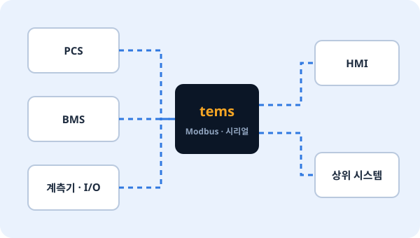
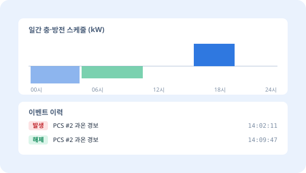
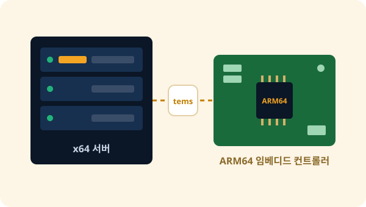

EMS ENGINE
tems
EMS 서버 플랫폼이자 PCS 컨트롤러 엔진.
현장 장비와 통신하며 설비를 제어하고, 이벤트와 이력을 기록합니다. 필요한 기능만 골라 구성하는 모듈형 구조라 서버에서도, 임베디드 컨트롤러에서도 가볍게 동작합니다.
app · 현장별 기능필요한 것만 선택
Modbus 마스터Modbus 슬레이브시계열 DB 적재데이터 정리 · 백업GPIO시뮬레이터
core · 제어 핵심장치 · 데이터 · 이벤트
장치 관리데이터 · 스케줄이벤트 · 알람이력자산HMI 연동시간 동기화
base · 공통 기반모든 프로세스 공통
개체 · 알람 관리메시징타이머노드 상태
FEATURES
설비 제어에 필요한 것을 엔진 하나에
01
현장 장비와 직접 통신
PCS, BMS, 계측기 같은 현장 장비를 포인트 단위로 연결하고, 상위 시스템에는 다시 장비처럼 데이터를 제공합니다.
- Modbus 마스터 / 슬레이브 (TCP, 시리얼)
- 장치 · 포인트 매핑을 설정 파일로 관리
- GPIO 등 컨트롤러 입출력 연동

02
이벤트 · 이력 · 스케줄
설비에서 일어나는 일을 놓치지 않고 남기고, 정해진 시간표대로 운전합니다.
- 이벤트 · 알람 발생과 해제 기록
- 운전 이력 저장, 시계열 DB(PostgreSQL) 고속 적재
- 일 단위 운전 스케줄 · 프로파일
- 오래된 데이터 자동 정리 · 백업

03
모듈형 프로세스 구조
기능마다 독립된 프로세스로 동작합니다. 현장에 필요한 기능만 켜고, 한 기능의 문제가 전체 설비 제어로 번지지 않도록 설계했습니다.
- 프로세스별 독립 설정 파일 · 공통 설정 체계
- 프로세스 단위 시작 · 중지 · 재시작
- NTP 시간 동기화로 현장 간 시각 일치
현장마다 다른 구성도 쉽게
ESS, 태양광 연계, PCS 컨트롤러 등 현장 특성에 맞춰 app 계층을 조합합니다.
04
서버부터 임베디드까지
같은 엔진을 x64 Linux 서버와 ARM64 임베디드 컨트롤러에서 함께 씁니다. PCS 제조사는 자사 컨트롤러에 tems를 그대로 탑재할 수 있습니다.
- x64 Linux (Ubuntu) 서버
- ARM64 임베디드 Linux 컨트롤러

SPEC
주요 사양
| 제품 형태 | EMS 서버 플랫폼 / PCS 컨트롤러 엔진 (소프트웨어) |
|---|---|
| 실행 환경 | x64 Linux 서버, ARM64 임베디드 Linux |
| 장치 통신 | Modbus 마스터 · 슬레이브 (TCP, 시리얼), GPIO |
| 데이터 | 이벤트 · 알람, 이력, 스케줄, 자산, 시계열 DB(PostgreSQL) 적재 |
| 구조 | base · core · app 3계층 모듈형 프로세스, 프로세스별 설정 파일 |
| 운영 | NTP 시간 동기화, 데이터 정리 · 백업, tOps 연동 원격 운영 |
세부 사양과 추가 프로토콜 지원은 현장 요구에 따라 협의합니다.
PACKAGE
단독으로, 또는 tOps와 함께
tems 단독
- 자사 운영 체계가 이미 있는 경우
- PCS 제조사의 컨트롤러 엔진 탑재
- 현장 설비 제어 · 기록에 집중
tems + tOps 추천
- 여러 현장의 tems 서버를 한 화면에서 감시
- tems 설정을 검증된 화면으로 원격 편집
- 프로세스 재시작 · 배포 · 백업을 현장 방문 없이
tems 도입을 검토하고 계신가요?
현장 구성과 연동 장비를 알려주시면 맞는 구성을 제안해 드립니다.